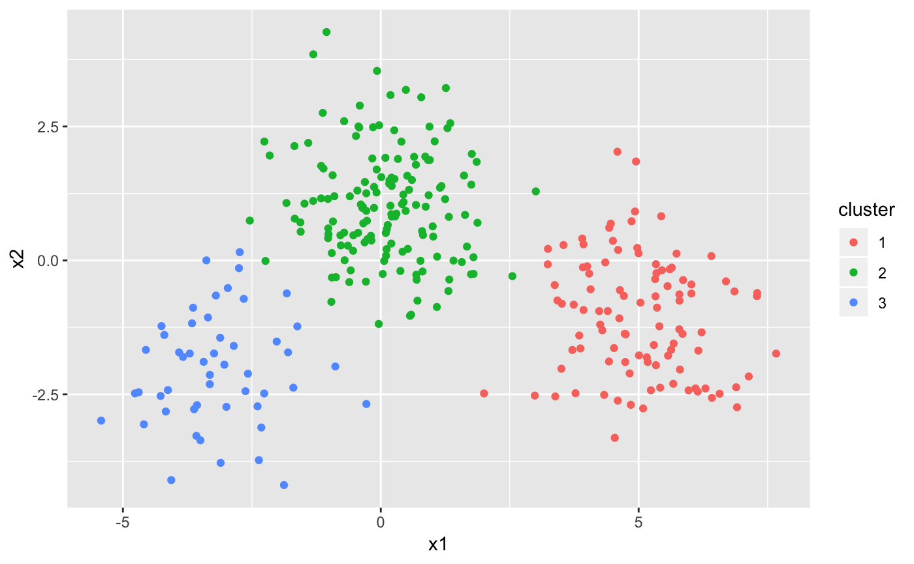
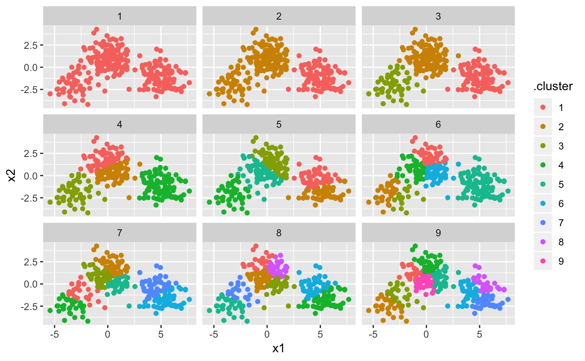
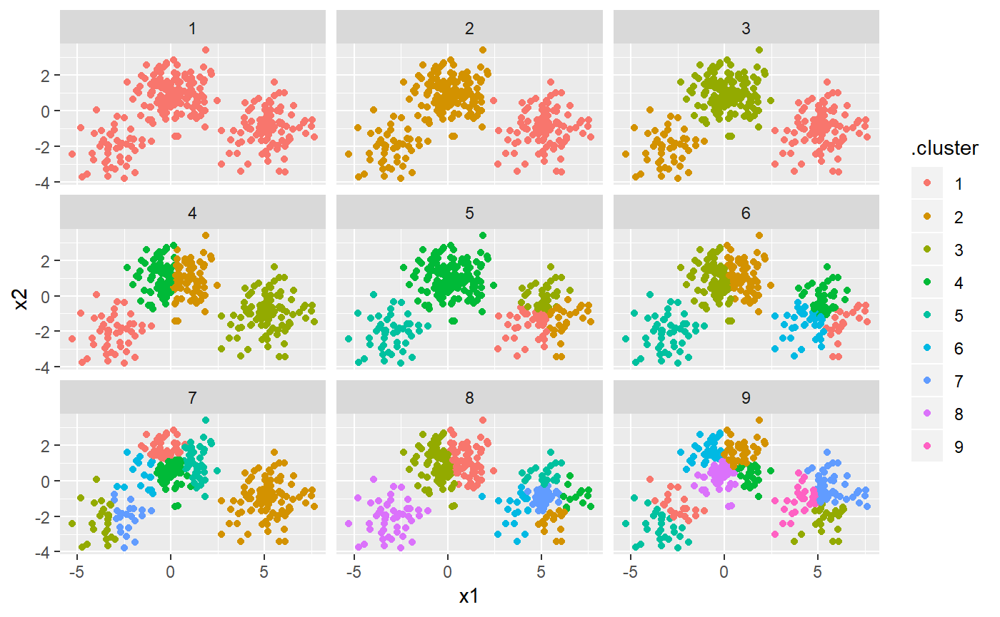
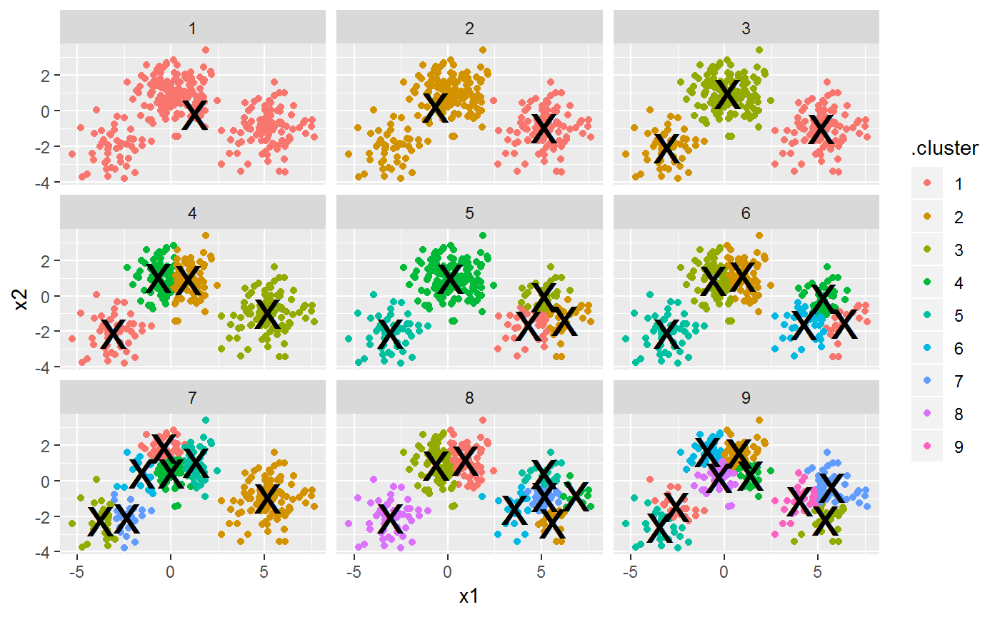

K-means clustering serves as a very useful example of tidy data, and especially the distinction between the three tidying functions: tidy, augment, and glance.
Let’s start by generating some random two-dimensional data with three clusters. Data in each cluster will come from a multivariate gaussian distribution, with different means for each cluster:
library(dplyr)
library(ggplot2)
library(purrr)
library(tibble)
library(tidyr)
set.seed(27)
centers <- tibble(
cluster = factor(1:3),
num_points = c(100, 150, 50), # number points in each cluster
x1 = c(5, 0, -3), # x1 coordinate of cluster center
x2 = c(-1, 1, -2) # x2 coordinate of cluster center
)
labelled_points <- centers %>%
mutate(
x1 = map2(num_points, x1, rnorm),
x2 = map2(num_points, x2, rnorm)
) %>%
select(-num_points) %>%
unnest(x1, x2)
ggplot(labelled_points, aes(x1, x2, color = cluster)) +
geom_point()
This is an ideal case for k-means clustering. We’ll use the built-in kmeans function, which accepts a dataframe with all numeric columns as it’s primary argument.
points <- labelled_points %>%
select(-cluster)
kclust <- kmeans(points, centers = 3)
kclust## K-means clustering with 3 clusters of sizes 51, 101, 148
##
## Cluster means:
## x1 x2
## 1 -3.14292460 -2.000043
## 2 5.00401249 -1.045811
## 3 0.08853475 1.045461
##
## Clustering vector:
## [1] 2 2 2 2 2 2 2 2 2 2 2 2 2 2 2 2 2 2 2 2 2 2 2 2 2 2 2 2 2 2 2 2 2 2 2
## [36] 2 2 2 2 2 2 2 2 2 2 2 2 2 2 2 2 2 2 2 2 2 2 2 2 2 2 2 2 2 2 2 2 2 2 2
## [71] 2 2 2 2 2 2 2 2 2 2 2 2 2 2 2 2 2 2 2 2 2 2 2 2 2 2 2 2 2 2 3 3 3 3 3
## [106] 3 3 3 3 3 3 3 3 3 3 3 3 3 3 3 3 3 3 3 3 3 3 3 3 3 3 3 3 3 3 3 3 3 3 3
## [141] 3 3 3 3 3 3 3 3 3 3 3 3 3 3 3 3 3 3 3 3 3 3 3 3 3 3 3 3 3 3 3 3 3 3 3
## [176] 3 3 3 3 3 3 3 3 3 3 3 3 3 3 3 3 3 3 3 3 3 3 3 2 3 3 3 3 3 3 3 3 3 3 3
## [211] 3 3 3 3 3 3 3 3 3 3 3 3 3 3 3 3 3 3 3 3 3 3 3 3 3 3 3 3 3 3 3 3 3 1 3
## [246] 3 3 3 3 3 1 1 1 1 1 1 1 1 1 1 1 1 1 1 1 1 1 1 1 1 1 1 1 1 1 1 1 1 1 1
## [281] 1 1 1 1 1 1 1 1 1 1 1 1 1 1 1 1 1 1 1 1
##
## Within cluster sum of squares by cluster:
## [1] 108.8112 243.2092 298.9415
## (between_SS / total_SS = 82.5 %)
##
## Available components:
##
## [1] "cluster" "centers" "totss" "withinss"
## [5] "tot.withinss" "betweenss" "size" "iter"
## [9] "ifault"summary(kclust)## Length Class Mode
## cluster 300 -none- numeric
## centers 6 -none- numeric
## totss 1 -none- numeric
## withinss 3 -none- numeric
## tot.withinss 1 -none- numeric
## betweenss 1 -none- numeric
## size 3 -none- numeric
## iter 1 -none- numeric
## ifault 1 -none- numericThe output is a list of vectors, where each component has a different length. There’s one of length 300: the same as our original dataset. There are a number of elements of length 3: withinss, tot.withinss, and betweenss- and centers is a matrix with 3 rows. And then there are the elements of length 1: totss, tot.withinss, betweenss, and iter.
These differing lengths have a deeper meaning when we want to tidy our dataset: they signify that each type of component communicates a different kind of information.
cluster (300 values) contains information about each point
centers, withinss and size (3 values) contain information about each cluster
totss, tot.withinss, betweenss, and iter (1 value) contain information about the full clustering
Which of these do we want to extract? There is no right answer: each of them may be interesting to an analyst. Because they communicate entirely different information (not to mention there’s no straightforward way to combine them), they are extracted by separate functions. augment adds the point classifications to the original dataset:
library(broom)
augment(kclust, points)## # A tibble: 300 x 3
## x1 x2 .cluster
## <dbl> <dbl> <fct>
## 1 6.91 -2.74 2
## 2 6.14 -2.45 2
## 3 4.24 -0.946 2
## 4 3.54 0.287 2
## 5 3.91 0.408 2
## 6 5.30 -1.58 2
## 7 5.01 -1.77 2
## 8 6.16 -1.68 2
## 9 7.13 -2.17 2
## 10 5.24 -2.42 2
## # ... with 290 more rowsThe tidy function summarizes on a per-cluster level:
tidy(kclust)## # A tibble: 3 x 5
## x1 x2 size withinss cluster
## * <dbl> <dbl> <int> <dbl> <fct>
## 1 -3.14 -2.00 51 109. 1
## 2 5.00 -1.05 101 243. 2
## 3 0.0885 1.05 148 299. 3And as it always does, the glance function extracts a single-row summary:
glance(kclust)## # A tibble: 1 x 4
## totss tot.withinss betweenss iter
## <dbl> <dbl> <dbl> <int>
## 1 3724. 651. 3073. 2While these summaries are useful, they would not have been too difficult to extract out from the dataset yourself. The real power comes from combining these analyses with dplyr.
Let’s say we want to explore the effect of different choices of k, from 1 to 9, on this clustering. First cluster the data 9 times, each using a different value of k, then create columns containing the tidied, glanced and augmented data:
kclusts <- tibble(k = 1:9) %>%
mutate(
kclust = map(k, ~kmeans(points, .x)),
tidied = map(kclust, tidy),
glanced = map(kclust, glance),
augmented = map(kclust, augment, points)
)
kclusts## # A tibble: 9 x 5
## k kclust tidied glanced augmented
## <int> <list> <list> <list> <list>
## 1 1 <S3: kmeans> <tibble [1 x 5]> <tibble [1 x 4]> <tibble [300 x 3]>
## 2 2 <S3: kmeans> <tibble [2 x 5]> <tibble [1 x 4]> <tibble [300 x 3]>
## 3 3 <S3: kmeans> <tibble [3 x 5]> <tibble [1 x 4]> <tibble [300 x 3]>
## 4 4 <S3: kmeans> <tibble [4 x 5]> <tibble [1 x 4]> <tibble [300 x 3]>
## 5 5 <S3: kmeans> <tibble [5 x 5]> <tibble [1 x 4]> <tibble [300 x 3]>
## 6 6 <S3: kmeans> <tibble [6 x 5]> <tibble [1 x 4]> <tibble [300 x 3]>
## 7 7 <S3: kmeans> <tibble [7 x 5]> <tibble [1 x 4]> <tibble [300 x 3]>
## 8 8 <S3: kmeans> <tibble [8 x 5]> <tibble [1 x 4]> <tibble [300 x 3]>
## 9 9 <S3: kmeans> <tibble [9 x 5]> <tibble [1 x 4]> <tibble [300 x 3]>We can turn these into three separate datasets each representing a different type of data: Then tidy the clusterings three ways: using tidy, using augment, and using glance. Each of these goes into a separate dataset as they represent different types of data.
clusters <- kclusts %>%
unnest(tidied)
assignments <- kclusts %>%
unnest(augmented)
clusterings <- kclusts %>%
unnest(glanced, .drop = TRUE)Now we can plot the original points, with each point colored according to the predicted cluster.
p1 <- ggplot(assignments, aes(x1, x2)) +
geom_point(aes(color = .cluster)) +
facet_wrap(~ k)
p1
Already we get a good sense of the proper number of clusters (3), and how the k-means algorithm functions when k is too high or too low. We can then add the centers of the cluster using the data from tidy:
p2 <- p1 + geom_point(data = clusters, size = 10, shape = "x")
p2
The data from glance fits a different but equally important purpose: it lets you view trends of some summary statistics across values of k. Of particular interest is the total within sum of squares, saved in the tot.withinss column.
ggplot(clusterings, aes(k, tot.withinss)) +
geom_line()
This represents the variance within the clusters. It decreases as k increases, but one can notice a bend (or “elbow”) right at k=3. This bend indicates that additional clusters beyond the third have little value. (See here for a more mathematically rigorous interpretation and implementation of this method). Thus, all three methods of tidying data provided by broom are useful for summarizing clustering output.